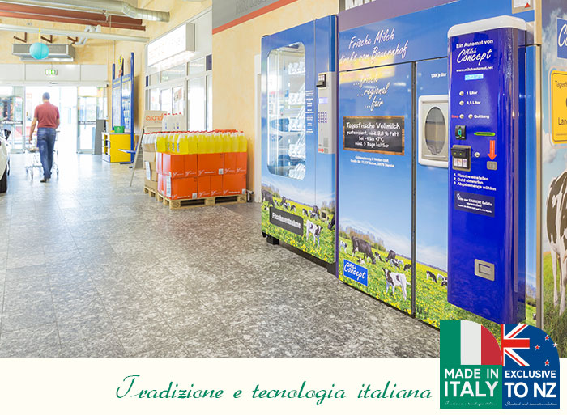
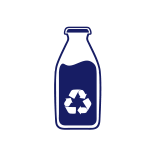
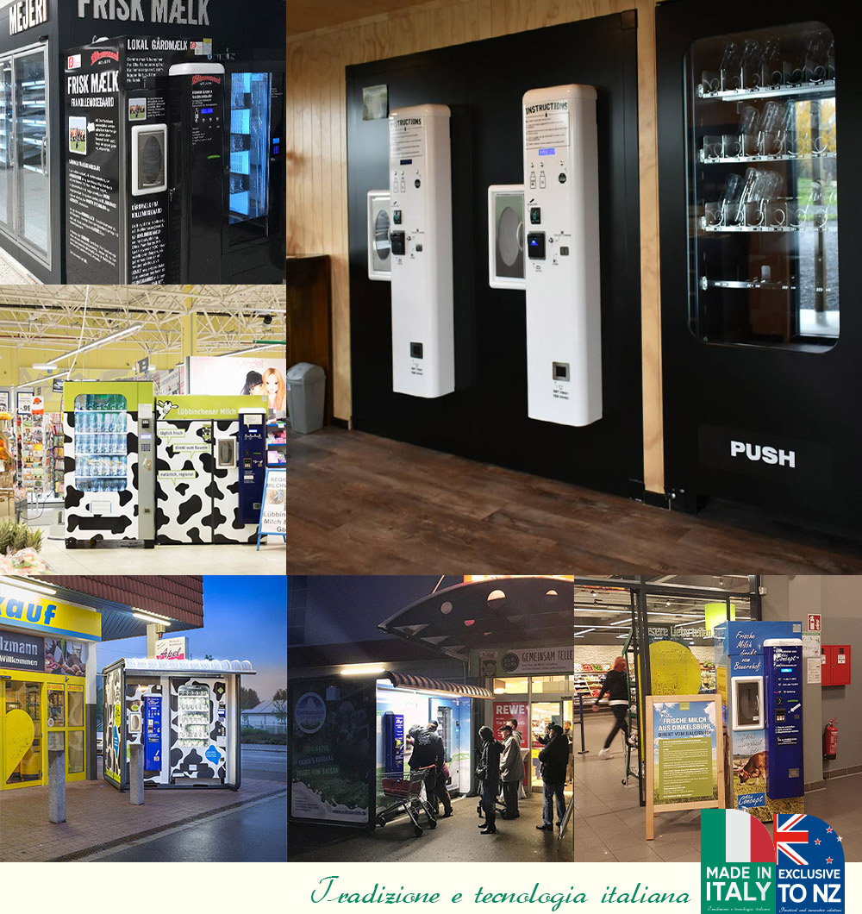

Milk Dispensers
High quality Italian built machines with stainless tanks, refrigeration, alarms, payment options and accurate measuring.
Dispensing machines, bottles and consultancy
Sell raw milk directly from your farm gate with a self-service dispenser, supported by practical setup advice, reusable bottles, and New Zealand based sales and support.

What Village Vending does
Village Milk's range of vending and dispensing machines helps farms sell a wide range of products 24/7, tap into demand for locally sourced food, and diversify income beyond fluctuating global prices.
Services
High quality Italian built machines with stainless tanks, refrigeration, alarms, payment options and accurate measuring.
Purpose-built dispensing for dairy products, ice cream, honey, eggs, olive oil, wine, water and other packaged goods.
Viability assessment, scoping, registration guidance, transit planning and implementation support from dairy farmers.

High quality, easy to clean 1 litre glass bottles with secure metal lids, available by the pallet.

Clean In Place tanks, removable washing systems, refrigeration, monitoring and serviceable parts support help keep the setup simple to run.
Why farmers choose it
Cut out the middleman and offer customers milk that is fresh, local, traceable and served through a self-service process.